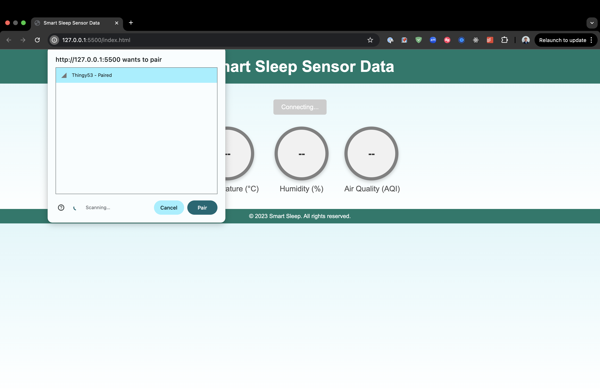

Sensors and OOP
Project Overview
This project focused on working with various sensors and implementing object-oriented programming principles to create interactive systems.
Development Process
Sensor Integration
Integrated various sensors and implemented their functionality.
OOP Implementation
Applied object-oriented programming principles to organize code.
System Testing
Tested and refined the sensor-based system.
Results

Sensor system setup and output

BLE connection implementation
Challenges & Solutions
Technical Challenges
Faced challenges in sensor integration and code organization.
Solutions:
- Implemented modular OOP design
- Optimized sensor calibration
- Enhanced error handling